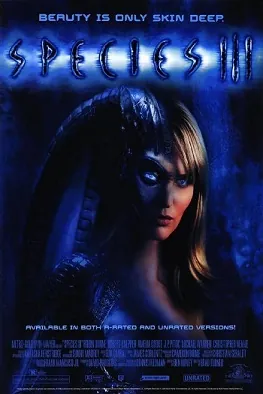

The genetics
Genetics drives this third Species film. Its creatures are human-alien hybrids descended from a government project, Project Athena, that combined human DNA with alien DNA and produced Sil and her clone Eve, and from an astronaut infected with alien DNA on Mars. Most of the resulting half-breeds are genetically defective and dying, while Sara is the most perfect combination. Dr. Abbot, a biochemistry professor, kidnaps and raises Sara to perfect the alien DNA and save the species, arguing that it is wrong to decide whether a species should live or die; his student Dean continues the work, falls for Sara and finally engineers a sterile mate for her so she will not be alone without endangering humanity. The film treats extinction and species rescue as an ethical question, but its science, from cross-species alien hybrids to pupation, is pure fantasy.
How genetics is portrayed
- Overall portrayal of genetics
- mixed Alien-DNA tampering is the source of the menace, but the sympathetic protagonist uses the same science responsibly at the end, and the film treats saving a species as a genuine ethical question.
- Outcome of the genetic intervention
- negative The hybrids descended from Project Athena are sick and violent and kill several people, and the race to perfect the DNA brings kidnapping, Abbot's death and a near meltdown; Dean's sterile mate is a contained coda.
- Dr. Bruce Abbot
- ambivalent Aim: benevolent, curiosity (mixed). He kidnaps the newborn hybrid and experiments on her to perfect the alien DNA and save the species, arguing it is wrong to decide which species dies, while the work endangers humans; he is a complex figure mortally wounded by a hybrid.
- Dean
- hero Aim: benevolent, personal (positive). Abbot's student, first lured by funding and then by his feelings for Sara, completes the refined DNA and makes her a sterile mate so she is not alone while humanity stays safe; he is the sympathetic protagonist.
- Project Athena
- villain Aim: not stated (not applicable). The government project that spliced alien and human DNA to make Sil appears only in the backstory as the source of the hybrid threat, which agent Wasach covers up.
The story
Eve, a clone of the alien hybrid Sil, gives birth to a daughter before being killed by Portus, a half-breed son of the astronaut Patrick Ross. Dr. Bruce Abbot, a biochemistry professor, takes the baby, names her Sara and raises her in secret, while a government agent, Wasach, destroys the evidence. Sara grows rapidly, and the dying Portus reveals that other half-breeds suffer from fatal illnesses. Abbot recruits his student Dean to help perfect the alien DNA and save the species. After pupating into an adult, Sara kills Abbot's superior when he tries to rape her and goes in search of a mate; a sick half-breed, Yosef, mortally wounds Abbot. Another hybrid, Amelia, kidnaps Dean's roommate Hastings to force him to refine the DNA. At Dean's experimental power plant, Sara throws Amelia into the core. Dean later uses the refined DNA to create a mate for Sara, making sure he is sterile.